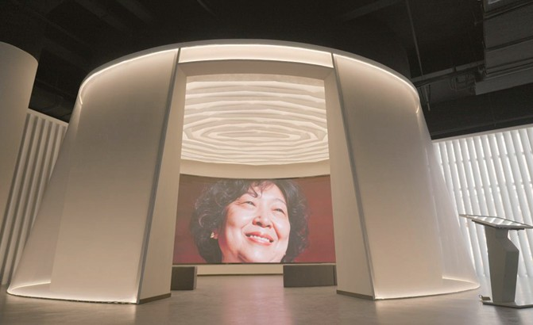
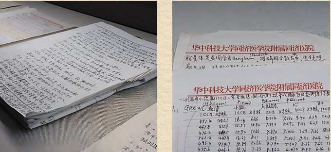
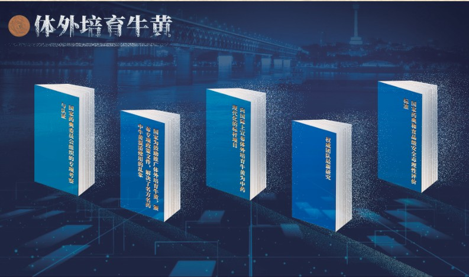
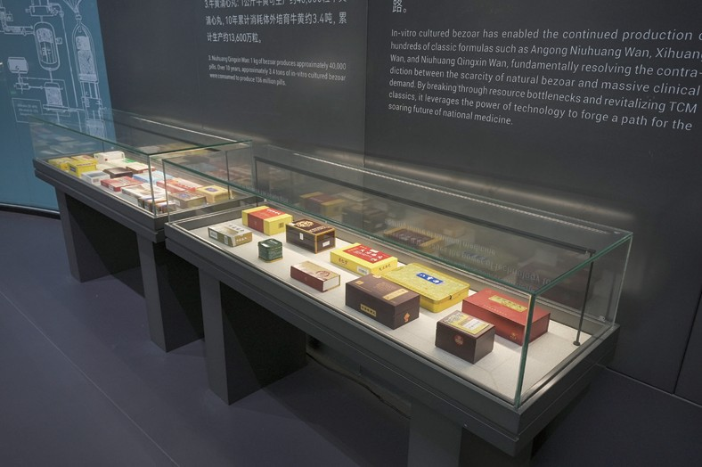

武汉同济医院蔡红娇教授，在恩师裘法祖院士支持下，扎根科研三十余载，运用现代仿生学技术，成功研制出可以与天然牛黄等同等量投料使用的体外培育牛黄，解决了千百年来含牛黄的经典名方的传承危机，践行化珍稀为普及，让牛黄惠泽大众，成为中医药现代化进程中的重要里程碑。
重点展项：《东方之娇》AI记录电影

以蔡红娇教授为主角，影片融合前沿的AI技术与珍贵的纪实素材，穿插历史影像、实验场景再现与人物访谈，全景展现一位了不起的中国科学家30余载的传奇科研路。
重点展项：蔡红娇教授研究手稿（原件）

重点展项：体外培育牛黄荣誉数字交互屏

一项科研成果要真正的惠及大众，必须经过最严苛的审视。
1997年，体外培育牛黄获批国家一类中药新药。
2002年，体外培育牛黄荣获国家技术发明二等奖（当年一等奖空缺）。
2002-2005年，国家“863”计划实施“体外培育牛黄替代天然牛黄的研究” 重大科研专项并通过科技部验收。
2003 年，国家药典委员会组织王永炎、陈可冀、张伯礼等十余位院士专家亲临武汉现场考察，一致认定体外培育牛黄与天然牛黄可以等同使用。同年，体外培育牛黄被列入国家五部委评定的“国家重点新产品”。
2004年，国家食药监局发布（2004）21号文明确规定：体外培育牛黄可等同等量替代天然牛黄。
2005年，体外培育牛黄被录入《中华人民共和国药典》，功能主治、用法用量与天然牛黄完全一致。
2016年，体外培育牛黄被《中药现代化20年（1996-2015）》白皮书列为中药现代化标杆。
重点展项：体外培育牛黄药品展柜

体外培育牛黄于 2001 年正式投产，历经二十余载产业化、市场化、规模化深耕，破局资源瓶颈，振兴国药经典，以科技之光，铸就中医药腾飞之路。
行业之基：为全国 130 余家制药企业、近 20 家中华老字号提供核心原料保障。
破局之刃：从根本上解决了天然牛黄稀缺与巨大临床需求之间的矛盾，纾解千年名贵药材供给瓶颈。
名药之魂：以匠心守护，让安宫牛黄丸、西黄丸、牛黄清心丸等传世名方得以永续传承、生生不息。